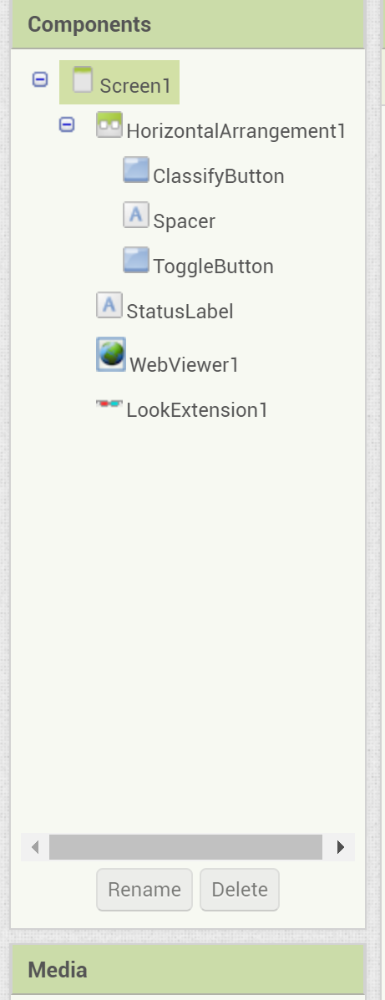
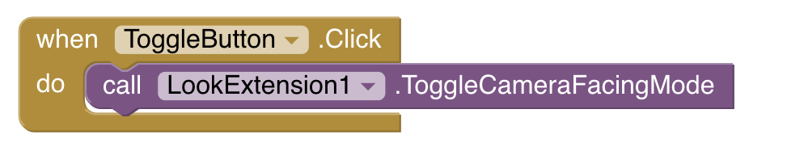
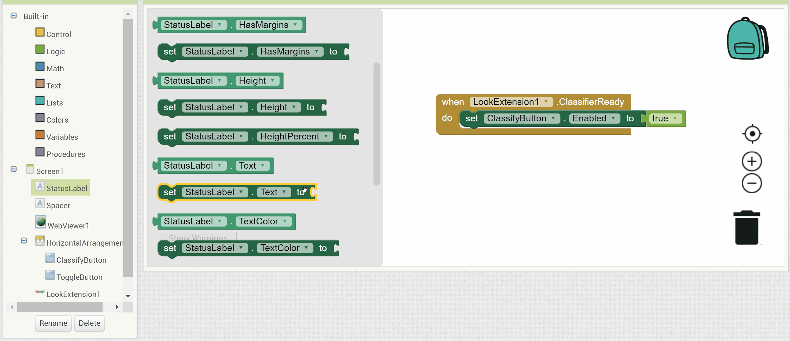
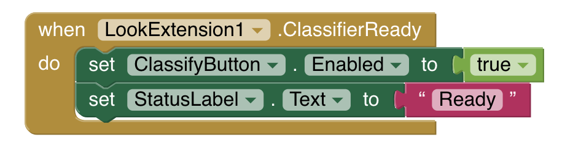
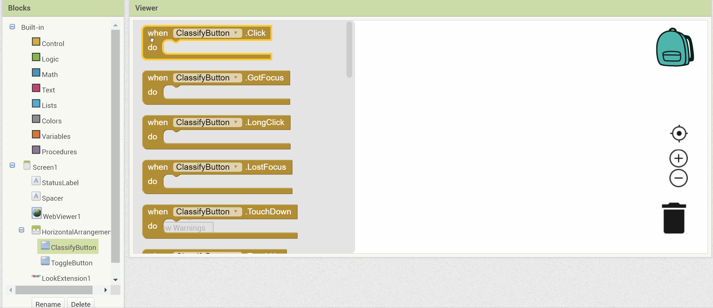
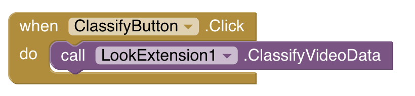
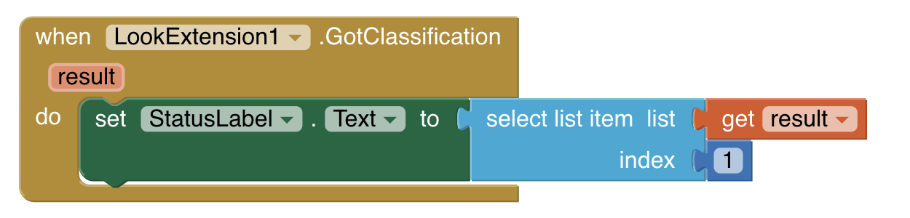

About this Tutorial
This tutorial introduces you to computer vision and image classification—the ability of computers to examine pictures or videos
and identify elements in the images. Only a few years ago, image classification applications were advanced artificial intelligence
research demonstrations, accessible only to experts using the world’s most powerful computers.
Since then, computers have become more powerful and techniques have improved to the point where you can now experiment with computer vision on your own by running image
classification apps on your smartphone and building your own original apps with App Inventor.
Connect your App
WhatIsIt Tutorial
1. Introduction
Let's make an app that can take a picture of an object and attempt to figure out what it is using the concept of machine learning.
Look at the Viewer screen. This is what the app will look like on your mobile device.
All of the basic components are there, but you still need to add the building blocks to make the app run.

2. The Components of the App
Let's take a closer look at the components and go down the list in order:
- HorizontalArrangement1 - This organizes Designer pieces horizontally.
- ClassifyButton - When the user presses this button, the object will be classified.
- Spacer - This is an invisible label to make the app look better.
- ToggleButton - When the user presses this button, the camera direction is toggled from front to back and vice versa.
- StatusLabel - This displays the classification of the given object.
- WebViewer1 - This is where the image is displayed when the camera is taking pictures to be classified.
- LookExtension1 - This is the component that does the magic of classifying the objects in the images.
3. The Blocks Editor
Click on the blocks button on the right side top bar. This is where you will make the code for the app. You'll do this by clicking and dragging in different blocks to make different types of code!

You will see some blocks already in the workplace; we will discuss those later.
4. Toggle the camera's direction
Now let's work on the Toggle button. When it is pressed, you want it to switch the direction of the device's camera.
Click on the ClassifyButton drawer, then drag the when ToggleButton.Click block to the workspace.
Click the LookExtension1 drawer, then drag the call LookExtension1.ToggleCameraFacingMode block to the when ToggleButton.Click block.

The final block will look like this:
When you click the Toggle button, it will tell the app to flip the camera's direction.
5. Prepping LookExtension
To be able to run the app, you need to wait for the Look extension to load and be ready to classify objects. Once it is ready, you can start pressing buttons. It would also be useful for the app to notify us when it’s ready to classify objects.
Let’s code the blocks to do that.
Click on the LookExtension1 drawer on the left and drag the when LookExtension1.ClassifierReady block to the workspace.

Click on the ClassifyButton drawer, then drag the set ClassifyButton.Enabled block to the when LookExtension1.ClassifierReady block.

Click on the Logic drawer, then drag the true block to the set ClassifyButton.Enabled block.
This will allow the Classify button to work as soon as the Look extension is ready to run.
Click on the StatusLabel drawer, then drag the set StatusLabel.Text block to the when LookExtension1.ClassifierReady block, under the set ClassifyButton.Enabled block.
Click on the Text drawer, then drag a blank text " " block to the StatusLabel.Text block. Type "Ready" into the blank text block.

The final block will look like this:
As soon as the Look extension is ready, the word "Ready" shows up on the screen and the Classify button can be pushed!
6. Coding the Classify Functionality
Now you want your app to interpret the image it sees.
Let's construct the blocks to make that happen.
Click on the ClassifyButton drawer on the left and drag the when ClassifyButton.Click block to the workspace.
Click on the LookExtension1 drawer, then drag the block call LookExtension1.ClassifyVideoData into the when ClassifyButton.Click block.

This should be the final combined block:
When the Classify Button is clicked, the Look Extension will classify whatever image is being displayed through your device's video.
7. Displaying the Classification Result
Once the Look Extension classifies an image, you want to see that result on the screen.
Click on the LookExtension1 drawer on the left and drag the when LookExtension1.GotClassification block to the workspace. This block is triggered once the Look Extension classifies an image.

Change the text of StatusLabel.
Click on the StatusLabel drawer, then drag the set StatusLabel.Text block to the LookExtension1.GotClassification block.

Click on the Lists drawer, then drag the select list item block to the set StatusLabel.Text block.

Hover over the input parameter result in the when LookExtension1.GotClassification block. From there, drag the get result block into the list part of the select list item block. result is what the Look Extension classifies an image to be, which is a list of the top ten possibilities with corresponding confidences.

Click on the Math drawer and drag the value 0 onto the index of the select list item block. Change the 0 to a 1.
You do this because result returns a list of the top ten classifications along with their confidence level. Right now you only want the first and most likely classification. So you will retrieve the first item in the list.

The final block will look like this:
What this code does is displays the first possibility in the list the Look extension returns after it classifies the image.
8. Error Handling
These other two blocks have already been given to you in order to handle any error messages returned by the LookExtension.
When the LookExtension encounters an error, it returns an error code made of numbers. These code blocks translate the error number into text that humans can understand. When making modifications to the app, these may be useful in guiding you!


9. Test it out!
Try it out on your device. Take photos of different objects and see how confident your app is in identifying them.

If you are unsure of how to connect your device, go ahead and check the Connect Your App tab above.
Expand your app
Make the device speak the classification result rather than just showing it in the status label. You might want to have the app say only the class name without the confidence value.
Using the confidencesThe app’s GotClassification event shows only the first of the ten items in the classification result. Modify the app to show more than one. Examining these might help explain some of the classification errors (such as the keyboard being identified as a crossword puzzle). You could also use the confidences to report better results. For example, if all the guesses have low confidence the app might respond “I don’t know.” Or if the top two guesses have about the same confidence, the app might respond “This is a clock or a sundial.”
Classify still imagesCreate another button to toggle to a still-image mode. Modify the demo to classify images other than those from the video camera. To do this, change the Look extension’s input property in the Designer to Image and use ClassifyImageData rather than ClassifyVideoData. You can get the image to classify by using the camera component